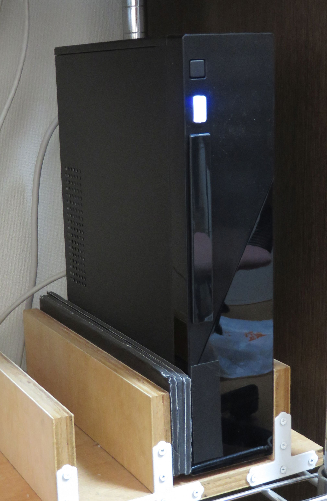

HOME
HOME
|
HOME |
初代自宅サーバは数千円で購入した中古の PC で、それが 8 年持ったのでかなりお買い得でした。 ただ、2 台体制で運用したのと、部品取りに予備機を購入したので、意外とコストはかかったかもしれません。
自宅サーバを8年運用してみて有用性が実感できたので、今回は新品のパーツで Linux サーバを自作することにしました。 今回は、 外部用と、内部用 (兼バックアップサーバ) の2台体制をやめて、外部用1台にしました。 その代りストレージを SSD 2台にして、信頼性を確保しました。
マザーボードは BIOSTAR J1800NH 6.1 にしました。 採用した理由は以下の通りです。
ケースは電源付で 5600 円のものを購入しました。ファンレス電源は高価なので予算の関係で見送りました。 購入したケースは意外と静だったので、満足しています。 価格.com でも評判は悪くないようです。
| 部品名 | 品番 | 購入価格 | 備考 |
|---|---|---|---|
| マザーボード | BIOSTAR J1800NH 6.1 | 8,480 | Celeron J1800オンボードmini-itxマザー, PC3L メモリー, dummy VGA |
| メモリー | バッファロー PC3L-12800対応 DDR3 SDRAM S.O.DIMM 2GB | 3,247 | 1.35V |
| SSD | ADATA Technology Premier Pro SP600 SSD SATA3.0 2.5 32GB | 4,579 | / 用 |
| SSD | ASP600S3-64GM-C-7MM | 5,226 | /home 用 |
| ケース | JMAX JX-FS100B ITX | 5,626 | 150W電源つき |
| 下駄 | Century CRGT2 裸族の下駄 | 895 | 2.5 inch SSD 2 台を 3.5 inch ベイにマウントするため |
初代自宅サーバでは、一部のソフトウェアをソースからビルドしていたため、メンテナンスが面倒でした。 今回はすべてのソフトを apt-get を使ってインストールしました。 こうすると、apt-get upgrade で簡単に更新できます。 現在は、cron をつかって毎晩
apt-get update apt-get upgradeを行っています。
web コンテンツは全部 html にして移行しました。ゲストブックはやめてしまったので、DB を使う必要はなくなりました。 このページくらいの規模と更新頻度ならば、ベタで html を書くのが一番手っ取り早いと思います。
下の写真が２代目自宅サーバです。

|
HOME |